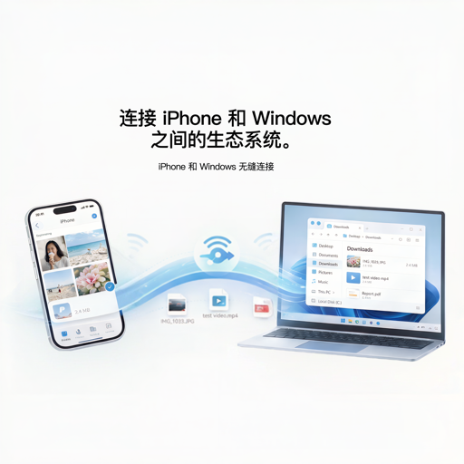
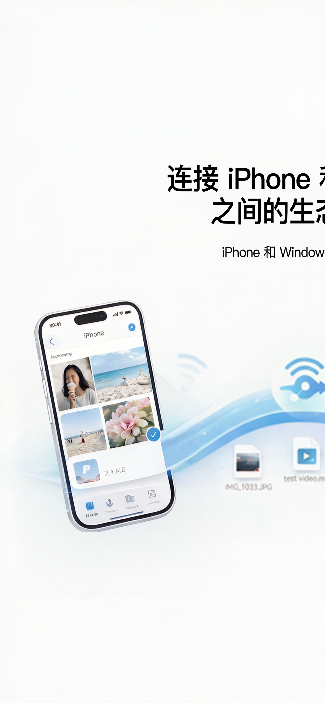
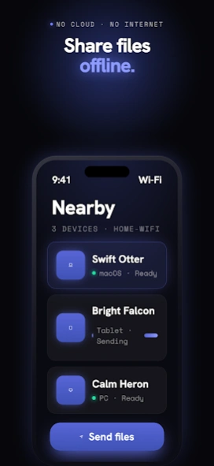
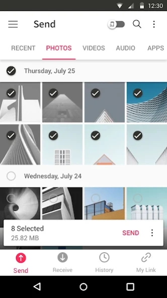
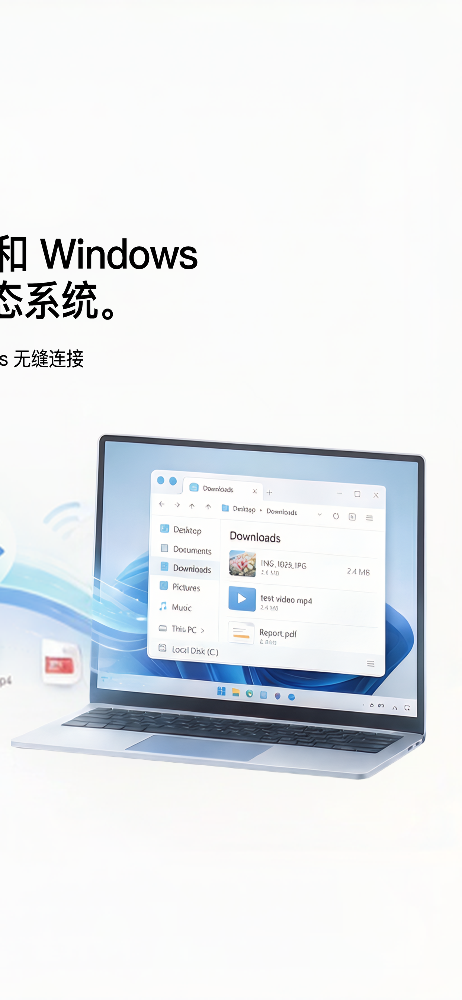

Why Do You Need an AirDrop Alternative for Windows?
If you use a Windows PC and an iPhone together, you've probably faced these situations:
- You took photos or videos on your iPhone and want to quickly move them to your PC for editing or backup;
- You copied a link, password, or paragraph on your PC and need it on your phone;
- You want to avoid messaging apps or email because they compress images, limit file sizes, or raise privacy concerns;
- You don't want to plug in a cable or upload files to the cloud.
Apple's AirDrop only works within the Apple ecosystem — there is no AirDrop for Windows. The tools below fill that gap and let you transfer files from iPhone to PC wirelessly.
Quick Comparison of the 5 Best iPhone-to-Windows Transfer Tools
| Tool | Type | Platforms | Internet Required? | Best For |
|---|---|---|---|---|
| WinSend | Free App | Windows + iOS | Local network only | Dedicated Win ↔ iPhone users |
| LocalSend | FreeOpen Source | All major platforms | Local network only | Privacy-focused users |
| Snapdrop | FreeWeb | Any browser | Needs snapdrop.net access | Quick, one-off transfers |
| Feem v4 | Free with ads | All major platforms | Local network only | Chat-style file sharing |
| Send Anywhere | FreePremium | All major platforms | Offline or cross-network | Large files across networks |
The 5 Tools in Detail

WinSend
The dedicated Windows ↔ iPhone transfer app
WinSend is built specifically for wireless file and clipboard sharing between Windows and iPhone. It communicates directly over your local network, so files, photos, and clipboard text move quickly without cloud uploads or account registration.

How to Use It
- Download and run the WinSend client on your Windows PC;
- Install the WinSend iOS app and make sure both devices are on the same Wi-Fi;
- Open the app — your Windows PC should appear automatically;
- Tap “Get from PC” to sync clipboard, or “Send Photos/Files” to transfer from iPhone to PC;
- If auto-discovery fails, use “Manual Connect” and enter your PC's local IP address.
Pros
- Optimized for Windows + iPhone workflows;
- True two-way clipboard sync;
- Fast local network transfers, no internet needed;
- No account or sign-up required.
Cons
- Only supports Windows ↔ iOS;
- Advanced features require Pro subscription;
- Windows client needs to stay running in the background.
LocalSend
Free, open-source AirDrop alternative
LocalSend is one of the most popular open-source file transfer tools. It supports Windows, macOS, Linux, Android, and iOS, uses UDP multicast to discover nearby devices, and transfers files over HTTPS with locally generated certificates. Your data never touches an external server.

How to Use It
- Install LocalSend on all devices;
- Make sure devices are on the same Wi-Fi or LAN;
- Open the app, go to the Send tab, and select files or text;
- Choose the target device from the Nearby Devices list;
- The receiver taps Accept, and the transfer completes.
Pros
- Fully free and open source, no ads;
- Supports nearly every major OS;
- HTTPS-encrypted transfers for strong privacy;
- Clean interface and easy device discovery.
Cons
- Requires installing a client on every device;
- Multicast discovery may be blocked on corporate or guest networks;
- iOS background discovery can be inconsistent.
Snapdrop
Browser-based AirDrop-style sharing
Snapdrop is a WebRTC-powered web app that looks and feels like AirDrop. As long as both devices are on the same network and open snapdrop.net, they can discover each other and exchange files. Its biggest advantage is that no installation is required, making it perfect for occasional or one-time transfers.

How to Use It
- Open a browser on both your Windows PC and iPhone;
- Visit snapdrop.net on both devices;
- Wait for each device to appear on the other's screen;
- Tap the target device icon and choose the file or text to send;
- Confirm on the receiving side to start the transfer.
Pros
- No app installation needed;
- Extremely simple, AirDrop-like interface;
- PWA support lets you add it to your home screen;
- Works on anything with a browser.
Cons
- Relies on a public server for initial discovery;
- Large file transfers are less stable than native apps;
- VPNs and complex networks can break discovery;
- Downloaded files may be renamed automatically.
Feem v4
Chat-style file sharing across devices
Feem v4 is a long-standing cross-platform transfer tool built around a chat-like experience. It has clients for Windows, iOS, Android, macOS, and Linux. Devices on the same Wi-Fi automatically discover each other, and you can send text, images, videos, and even folders through conversation-style sessions.

How to Use It
- Install Feem v4 on both Windows and iPhone;
- Open the app and wait for devices to appear;
- Select the target device to open a chat session;
- Tap the attachment button to send files or paste text directly;
- The receiver views and downloads content from the session.
Pros
- Chat-style history makes transfers easy to track;
- Supports folder transfers in some versions;
- Established tool with a broad user base;
- No internet required; pure local network transfer.
Cons
- Free version includes ads and feels dated;
- iOS integration with the system share sheet is weak;
- Some users report connection instability after updates;
- Feem v5 is now available, so v4 support is uncertain.
Send Anywhere
Cross-network transfers with a 6-digit key
Send Anywhere differs from the others because it doesn't require devices to be on the same network. Using a 6-digit key, you can transfer files across different networks or even different locations. The sender uploads or generates a key, and the receiver enters it to download — useful for sending large files to friends remotely.

How to Use It
- Open Send Anywhere on the sending device and select your files;
- Tap Send to generate a 6-digit key or QR code;
- On the receiving device, open Send Anywhere and choose Receive;
- Enter the 6-digit key and wait for the download;
- On the same LAN, you can also use Nearby device discovery for instant sending.
Pros
- Works across different Wi-Fi networks;
- Simple 6-digit key, easy for non-technical users;
- Supports large files and all major platforms;
- Flexible offline and online modes.
Cons
- Free version has file size and daily transfer limits;
- Cross-network transfers may go through relay servers;
- Privacy-conscious users should review data handling;
- Interface includes ads and upsells.
Step-by-Step: Transfer Files from iPhone to Windows with WinSend
If your main setup is a Windows PC and an iPhone, WinSend offers the smoothest experience. Here's the complete setup and usage flow:
Install the Windows Client
Visit winsend.app and download the Windows installer. Run it and allow local network access when prompted. Once running, the WinSend icon appears in your system tray.
Install the iOS App
Search for “WinSend” in the App Store and install it. Open the app and grant local network permission, which is required for discovering your Windows PC.
Connect to the Same Network
Make sure both your iPhone and Windows PC are connected to the same Wi-Fi router or hotspot. Corporate, campus, or guest networks may block device discovery — in that case, use Manual Connect.
Discover Your PC
Open the WinSend iOS app and wait a few seconds. Your Windows PC should appear under “My Device.” If it doesn't, tap the refresh button to rescan the local network.

WinSend automatically discovers your Windows PC on the same Wi-Fi.
Start Transferring
Once connected:
- iPhone → Windows: Tap “Send Photos to PC” or “Send Files to PC,” select your content, and it transfers directly to your Windows download folder.
- Windows → iPhone: Copy text or an image on your PC, then tap “Get Clipboard from PC” in the iOS app to sync it to your phone.
- Clipboard Sync: Enable auto clipboard sync and anything you copy on Windows automatically appears on iPhone, and vice versa.
Manual Connect (Fallback)
If auto-discovery fails, tap “Manual Connect” in the top-right corner and enter your Windows PC's local IP address, which you can find in the WinSend Windows client settings.
Which AirDrop Alternative Should You Choose?
- Mostly Windows + iPhone, want seamless clipboard and file sync → Choose WinSend. It's purpose-built for this exact workflow.
- Need full ecosystem coverage and care about open source/privacy → Choose LocalSend. Free, open source, and encrypted.
- Occasional one-off transfers, don't want to install anything → Choose Snapdrop. Just open a browser.
- Prefer chat-style sessions and transfer history → Choose Feem v4.
- Devices are on different networks or you send large files remotely → Choose Send Anywhere.
Get Started
Ready to transfer files between your iPhone and Windows PC like AirDrop? Download WinSend and follow the installation and pairing guide. Pairing takes under a minute.